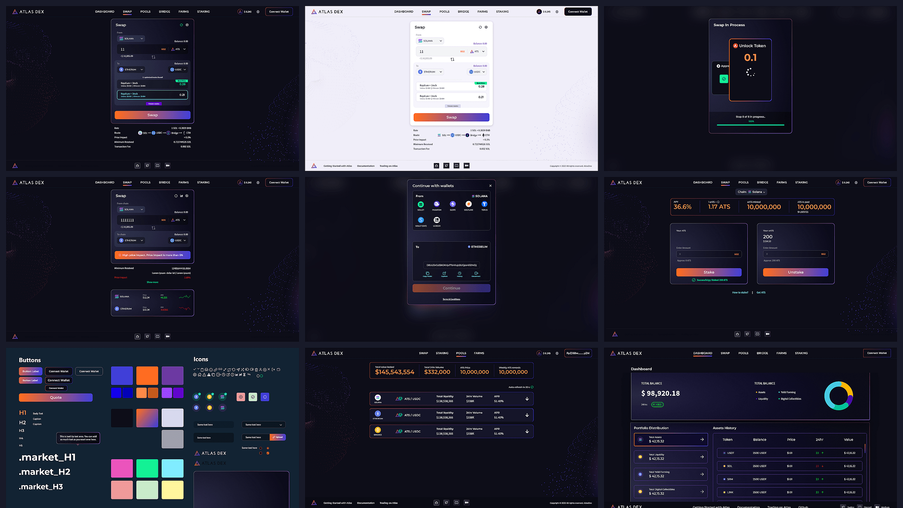

Atlas DEX
Cross-chain DEX aggregator built on Solana
Designed the full product experience for Atlas DEX — from swap and bridge to pools, staking, farms, dashboard, and the design system. Delivered a credible interface that supported the platform's launch and helped the product raise $6M from Jump Capital and Huobi Ventures.
On this page: Overview • Research Insights • Journey Rails • Product Philosophy • Workflow Transformations • What it Enables • Product Learnings • Impact & Outcomes

What we learned before designing anything
Three audiences, three distinct paths through the product
Three principles that governed every screen
Five complexity problems. Five simplification decisions.
Three workflows made trustworthy
What this project taught about designing for DeFi
Product shipped
Launched the initial DEX experience ahead of the funding milestone.
$6M raised
The design supported the product's raise from Jump Capital and Huobi Ventures.
Design confidence
Created a trusted cross-chain flow model for traders and liquidity providers.
System foundation
Established reusable UI patterns across swaps, bridges, staking, and dashboard screens.